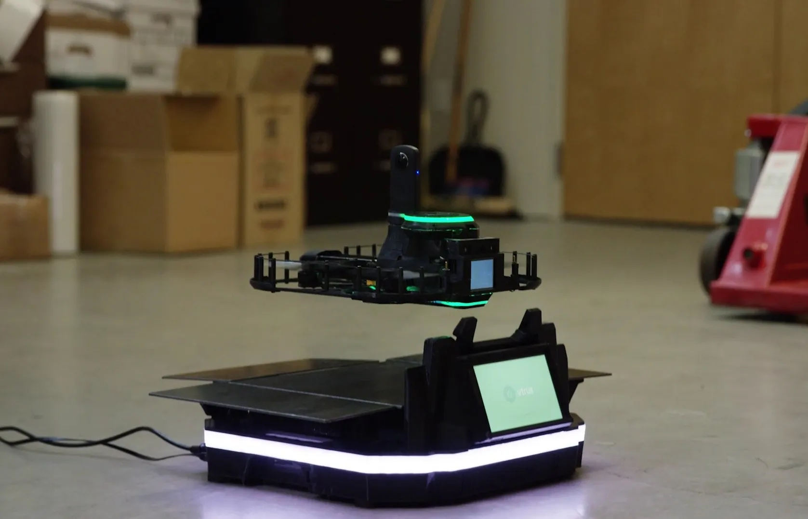
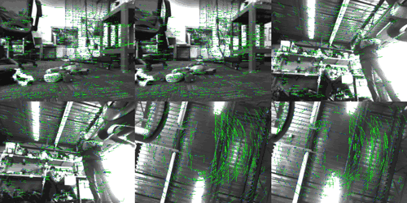
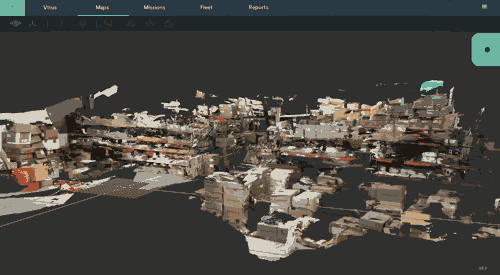
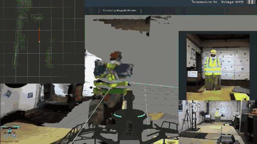
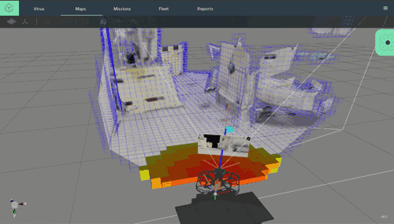
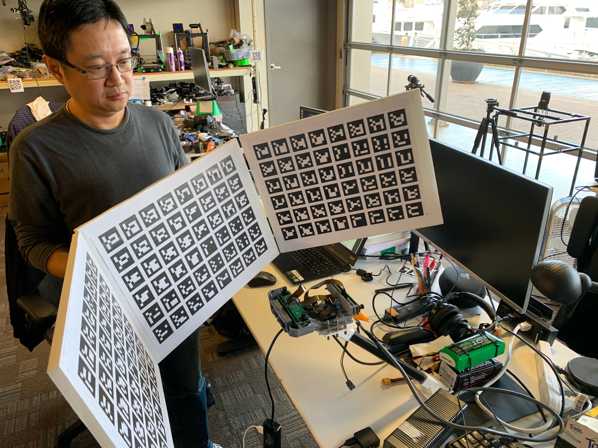

I was the CEO and co-founder of Vtrus Inc from 2017 to 2020, a robotics startup in Seattle, WA, developing autonomous drones for indoor inspection. We raised a $3M seed round, were nominated for Best Hardware Innovation at the GeekWire Awards and won a TechCrunch Disrupt Startup Battlefield award. Our Series A fundraising coincided with COVID, and our team joined our corporate investor, Fuji, which is now incorporating the technology into warehouse robots.
I'm grateful for the opportunity to work alongside my talented co-founders Jonathan Lenoff (now at Cruise) and Carlos R. Sanchez (now at Amazon Robotics), as well as our early employees Jeston Furqueron (now at Fuji), Dr. Grady Williams (Georgia Tech, now at Overland AI), Dr. Dongjiang Xu (now at Omega Medical Imaging), Yande Liu (Penn State, Autel) and Nikhil Baheti (CMU).
The Vtrus drone takes off from its base station, autonomously inspects an industrial environment using onboard 3D mapping and localization, and returns to the base to recharge.


We built a custom capture board on which six global-shutter cameras were time-synchronized with an IMU to perform visual-inertial Simultaneous Localization and Mapping (SLAM).
Using a technique known as voxel hashing, we were able to map large indoor spaces in 3D. It works similarly to paged memory: a background process loads only the voxels inside the camera frustum onto the GPU and saves the rest to disk.


Our lead robotics scientist, Dr. Grady Williams, implemented his novel Model Predictive Path Integral (MPPI) controller, which samples thousands of possible paths and chooses the best one to avoid obstacles and reach its goal.
Our lead software engineer, Jeston Furqueron, wrote a versatile simulation tool for designing and simulating flight plans. This helped us assess flight time and range.


Together with our lead computer vision engineer, Dr. Dongjiang Xu, we built this triple-plane target to quickly calibrate our surround-view camera suite of four stereo pairs.